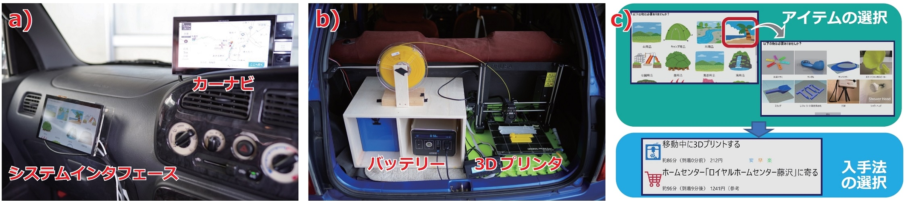

3DPrinCar 行き先に応じた物品を推薦・提供する乗用車
概要
本稿で提案するのは，3Dプリンタ・カーナビと統合し，行き先に応じた物品推薦・提供を行う乗用車"3DPrinCar"である．
行き先が海なら海用品（サンダル・スコップなど）を推薦し，さらに，車内で3Dプリントするか，移動途中に店舗を経由して購入するかを手段として提供する．3Dプリントする場合は，到着時間に合わせて精度を調整し，最良の品質で到着までに造形完了する．店舗購入の場合は，カーナビの経由地点として自動設定する．
提案システムによる旅行体験の変化を調査分析すべく，本稿では旅行のケーススタディを8件実施した．
システム
ユーザがカーナビに行き先を設定すると，提案システムはその行き先に応じた物品を検索し，インタフェース上にカテゴリ一覧として表示する． 例えば，行き先が富士山であった場合は「山」カテゴリから「三脚」「フリスビー」「ゴミ箱」などが推薦される．インタフェース上には，推薦された物品の画像が表示され，具体的な物品を選択すると入手方法が表示される．
そしてユーザは，その物品を3Dプリントして到着までに入手するか，店舗を経由し購入するかを選択することができる． 例えば，店舗に立ち寄ることで，「安く」入手することもできるし，搭載された3Dプリンタを使用して「楽」に入手することもできる．
このような選択肢ごとのメリットは，インタフェース上に「安」，「早」，「楽」というアイコンで表示される．3Dプリントする場合は，造形精度や造形時間，フィラメントの使用量などを調整した複数の選択肢を提供し，ユーザのニーズに合わせた物品の提供が可能である．

システム構成; a)システムインタフェース概観（助手席）, b)3Dプリンタ（トランク）, c)推薦インタフェース.